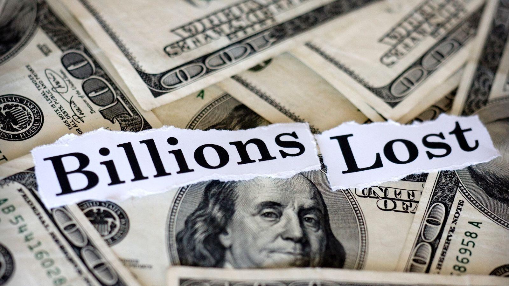

Disclosure
This post is for informational and educational purposes only. It is not financial advice. Always consult a qualified financial professional before making investment decisions. Short Read America by Audible Talents presents financial news and analysis designed to inform, not to advise.
Imagine waking up one morning, checking your account — and finding $22 billion gone. That's exactly what happened to the world's richest person, Elon Musk, in March 2026. And he wasn't alone. The planet's ten wealthiest people collectively shed more than $100 billion in a single month. Here's what that tells us about them, about the markets, and quietly — about the rest of us.
Watch: The Billionaire Wealth Wipeout Explained in 60 Seconds
The Numbers That Will Make Your Jaw Drop
Let's start with the scoreboard — because the scale is staggering. According to Forbes, the top 10 richest people on earth entered April 2026 with a combined net worth of $2.5 trillion, down more than $100 billion from just one month earlier. Nine of the ten are poorer than they were on March 1st. The biggest single loser? Bernard Arnault — the French billionaire behind Louis Vuitton, Christian Dior, and Moët & Chandon — dropped $28 billion in 30 days, sliding from #7 to #10. Elon Musk lost $22 billion. Mark Zuckerberg shed $27 billion. And Warren Buffett? He quietly fell off the list entirely, dropping from #9 to #11.
But here's the twist nobody is talking about: while billion-dollar empires were crumbling, a few men moved the other direction. Michael Dell — the kid who started selling computers out of his University of Texas dorm room at age 19 — climbed from #13 all the way to #8. And Rob Walton, the 81-year-old eldest son of Walmart founder Sam Walton, cracked the top 10 for the first time in years. His secret? Walmart stock — which is up 14% year-to-date while tech bleeds out.
- Elon Musk — Lost $22 billion in March; still #1 at $817 billion
- Bernard Arnault — Biggest single-month loss: $28 billion; dropped from #7 to #10
- Mark Zuckerberg — Down $27 billion; Meta shares fell nearly 1.5% YTD
- Rob Walton & Michael Dell — The quiet winners; both climbed the rankings while tech crashed
Get These Stories First — On YouTube
Short Read America by Audible Talents breaks down the biggest financial stories into sharp, digestible shorts — made for readers who want the facts without the noise. Subscribe and never miss a beat.
Why It Happened — And Why Your Portfolio Felt It Too
The culprit isn't hard to find. The "Magnificent Seven" — Apple, Amazon, Alphabet, Meta, Microsoft, Nvidia, and Tesla — powered the stock market to record highs in 2023, 2024, and 2025. In 2025 alone, all seven finished in the green, six of them by double digits. The top 10 billionaires added $578 billion to their combined wealth that year. It felt like it would never stop. Then 2026 arrived. Microsoft is down over 15% year-to-date. Amazon has dropped more than 10%. Tesla has shed 7.5%. The war between the U.S. and Iran rattled global markets, the S&P 500 and Nasdaq each sank nearly 5% in March alone, and the fortunes tied to these stocks went with them.
The lesson here isn't unique to billionaires. It's the same lesson every seasoned investor has had to learn at some point: when your wealth — or your retirement portfolio — is concentrated in one sector, a single market shift doesn't just sting. It can wipe out years of gains in weeks. The good news? History shows the recovery always comes. The investors who panic-sell almost always miss it.
- Diversify across sectors — Walmart held. Tech didn't. Spread your risk.
- Watch the private market — Musk's gains came from SpaceX and xAI, both privately held and insulated from daily market swings.
- Don't ignore "boring" stocks — Consumer staples, dividend plays, and value stocks rarely make headlines. They make returns when it counts.
- Stay the course — Buffett has outlasted every crash since the 1960s. His slight 2026 dip won't be his last — or his last recovery.
The Bigger Picture: What Billionaires Teach Regular Investors
You don't need $817 billion to take something away from this story. The billionaire wealth wipeout of early 2026 is, at its core, a masterclass in the same financial principles that apply at every level — from a $500,000 retirement account in Sacramento, California to a $500 billion empire in Austin, Texas. Concentration is dangerous. Patience is profitable. And the quiet money — the money nobody's writing headlines about — is often the money that's still standing when the dust settles.
The story isn't over. SpaceX is planning a public IPO later in 2026. The Walmart heirs are rising. The Magnificent Seven will either reclaim their crown or give way to something new. Whatever happens next, Short Read America will be there to break it down — in plain English, in under a minute, for readers who want to stay sharp without wading through the noise.
Stay Ahead of the Next Big Story
Join thousands of readers on Short Read America — your go-to source for the world's biggest financial stories, distilled into sharp, no-filler shorts on YouTube. Hit subscribe and stay in the know.